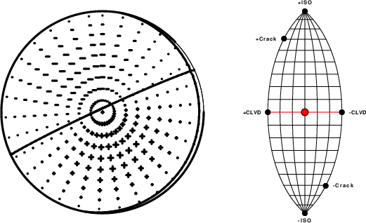
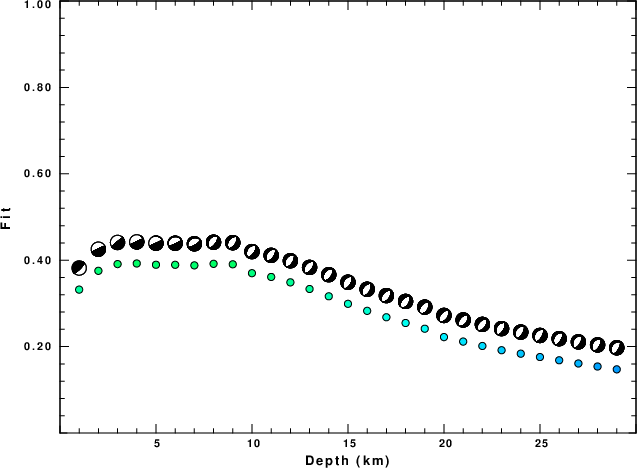
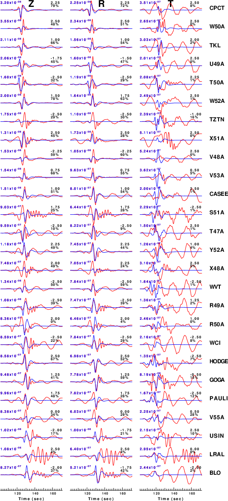
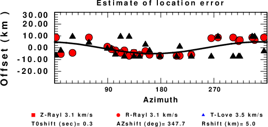

The focal mechanism was determined using broadband seismic waveforms. The location of the event and the and stations used for the waveform inversion are shown in the next figure.
|
|
|
|
The program wvfmtgrd96 was used with good traces observed at short distance to determine the focal mechanism, depth and seismic moment. This technique requires a high quality signal and well determined velocity model for the Green functions. To the extent that these are the quality data, this type of mechanism should be preferred over the radiation pattern technique which requires the separate step of defining the pressure and tension quadrants and the correct strike.
The observed and predicted traces are filtered using the following gsac commands:
cut o DIST/3.3 -20 o DIST/3.3 +50 rtr taper w 0.1 hp c 0.03 n 3 lp c 0.10 n 3The results of this grid search over depth are as follow:
MT Program H(km) Mxx(dyne-cm) Myy Mxy Mxz Myz Mzz Mw Fit WVFMTGRD96 1.0 -0.254E+22 -0.254E+22 0.254E+22 0.623E+22 -0.623E+22 0.509E+22 3.9384 0.3320 WVFMTGRD96 2.0 -0.144E+22 -0.386E+21 0.749E+21 -0.941E+22 0.437E+22 0.182E+22 3.9484 0.3755 WVFMTGRD96 3.0 -0.934E+21 -0.166E+22 0.139E+22 -0.617E+22 0.499E+22 0.260E+22 3.8820 0.3911 WVFMTGRD96 4.0 -0.201E+21 -0.530E+21 0.617E+21 -0.662E+22 0.304E+22 0.731E+21 3.8438 0.3925 WVFMTGRD96 5.0 0.764E+21 -0.357E+21 0.203E+21 -0.616E+22 0.290E+22 -0.407E+21 3.8236 0.3895 WVFMTGRD96 6.0 0.205E+22 0.258E+21 -0.756E+21 -0.582E+22 0.277E+22 -0.231E+22 3.8238 0.3894 WVFMTGRD96 7.0 0.355E+22 0.118E+22 -0.205E+22 -0.489E+22 0.282E+22 -0.474E+22 3.8449 0.3881 WVFMTGRD96 8.0 0.239E+22 0.488E+22 -0.342E+22 -0.241E+22 0.344E+22 -0.727E+22 3.8827 0.3917 WVFMTGRD96 9.0 0.274E+22 0.559E+22 -0.391E+22 -0.174E+22 0.248E+22 -0.833E+22 3.8985 0.3906 WVFMTGRD96 10.0 0.258E+22 0.526E+22 -0.369E+22 -0.260E+22 0.371E+22 -0.784E+22 3.9047 0.3700 WVFMTGRD96 11.0 0.288E+22 0.588E+22 -0.412E+22 -0.183E+22 0.261E+22 -0.876E+22 3.9131 0.3613 WVFMTGRD96 12.0 0.274E+22 0.592E+22 -0.408E+22 -0.118E+22 0.296E+22 -0.866E+22 3.9109 0.3488 WVFMTGRD96 13.0 0.307E+22 0.545E+22 -0.412E+22 -0.150E+22 0.279E+22 -0.852E+22 3.9062 0.3334 WVFMTGRD96 14.0 0.305E+22 0.540E+22 -0.408E+22 -0.148E+22 0.277E+22 -0.845E+22 3.9036 0.3165 WVFMTGRD96 15.0 0.265E+22 0.619E+22 -0.418E+22 -0.732E+20 0.197E+22 -0.885E+22 3.9067 0.2991 WVFMTGRD96 16.0 0.264E+22 0.618E+22 -0.417E+22 -0.730E+20 0.197E+22 -0.882E+22 3.9059 0.2828 WVFMTGRD96 17.0 0.320E+22 0.574E+22 -0.443E+22 0.966E+21 0.558E+21 -0.895E+22 3.9056 0.2681 WVFMTGRD96 18.0 0.288E+22 0.602E+22 -0.449E+22 0.153E+22 0.712E+21 -0.890E+22 3.9095 0.2547 WVFMTGRD96 19.0 0.293E+22 0.612E+22 -0.457E+22 0.155E+22 0.724E+21 -0.905E+22 3.9143 0.2415 WVFMTGRD96 20.0 0.334E+22 0.621E+22 -0.468E+22 0.198E+22 -0.803E+21 -0.955E+22 3.9288 0.2222 WVFMTGRD96 21.0 0.337E+22 0.626E+22 -0.472E+22 0.199E+22 -0.810E+21 -0.963E+22 3.9313 0.2117 WVFMTGRD96 22.0 0.356E+22 0.638E+22 -0.492E+22 0.107E+22 0.619E+21 -0.993E+22 3.9359 0.2015 WVFMTGRD96 23.0 0.273E+22 0.600E+22 -0.414E+22 -0.206E+22 0.485E+22 -0.873E+22 3.9400 0.1917 WVFMTGRD96 24.0 0.278E+22 0.609E+22 -0.421E+22 -0.209E+22 0.493E+22 -0.887E+22 3.9447 0.1837 WVFMTGRD96 25.0 0.282E+22 0.619E+22 -0.428E+22 -0.213E+22 0.500E+22 -0.901E+22 3.9491 0.1759 WVFMTGRD96 26.0 0.286E+22 0.628E+22 -0.434E+22 -0.216E+22 0.508E+22 -0.914E+22 3.9535 0.1684 WVFMTGRD96 27.0 0.290E+22 0.637E+22 -0.440E+22 -0.219E+22 0.515E+22 -0.927E+22 3.9574 0.1610 WVFMTGRD96 28.0 0.294E+22 0.645E+22 -0.446E+22 -0.222E+22 0.521E+22 -0.938E+22 3.9610 0.1540 WVFMTGRD96 29.0 0.297E+22 0.652E+22 -0.451E+22 -0.224E+22 0.528E+22 -0.949E+22 3.9644 0.1474
The best solution is
WVFMTGRD96 4.0 -0.201E+21 -0.530E+21 0.617E+21 -0.662E+22 0.304E+22 0.731E+21 3.8438 0.3925
The complete moment tensor decomposition using the program mtinfo is given in the text file MTGRDDCinfo.txt. (Jost, M. L., and R. B. Herrmann (1989). A student's guide to and review of moment tensors, Seism. Res. Letters 60, 37-57. SRL_60_2_37-57.pdf.
The P-wave first motion mechanism corresponding to the best fit is
|  |
|
|
The best fit as a function of depth is given in the following figure:
|  |
|
|
The comparison of the observed and predicted waveforms is given in the next figure. The red traces are the observed and the blue are the predicted. Each observed-predicted component is plotted to the same scale and peak amplitudes are indicated by the numbers to the left of each trace. A pair of numbers is given in black at the right of each predicted traces. The upper number it the time shift required for maximum correlation between the observed and predicted traces. This time shift is required because the synthetics are not computed at exactly the same distance as the observed and because the velocity model used in the predictions may not be perfect. A positive time shift indicates that the prediction is too fast and should be delayed to match the observed trace (shift to the right in this figure). A negative value indicates that the prediction is too slow. The lower number gives the percentage of variance reduction to characterize the individual goodness of fit (100% indicates a perfect fit).
The bandpass filter used in the processing and for the display was
cut o DIST/3.3 -20 o DIST/3.3 +50 rtr taper w 0.1 hp c 0.03 n 3 lp c 0.10 n 3
|  |
|
|
A check on the assumed source location is possible by looking at the time shifts between the observed and predicted traces. The time shifts for waveform matching arise for several reasons:
Time_shift = A + B cos Azimuth + C Sin Azimuth
The time shifts for this inversion lead to the next figure:

The derived shift in origin time and epicentral coordinates are given at the bottom of the figure.